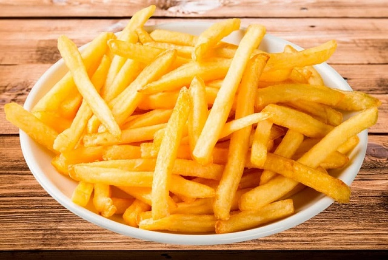

PAPAS FRITAS
Receta de papas fritas

Ingredientes
3 o 4 papas (300gr.)
Aceite
Sal
Elaboración (Pasos)
Pelar las papas
Cortarlas en bastón
Calentar el aceite en una sartén
Cocinar hasta que estén doradas
Removerlas del aceite y salar a gusto